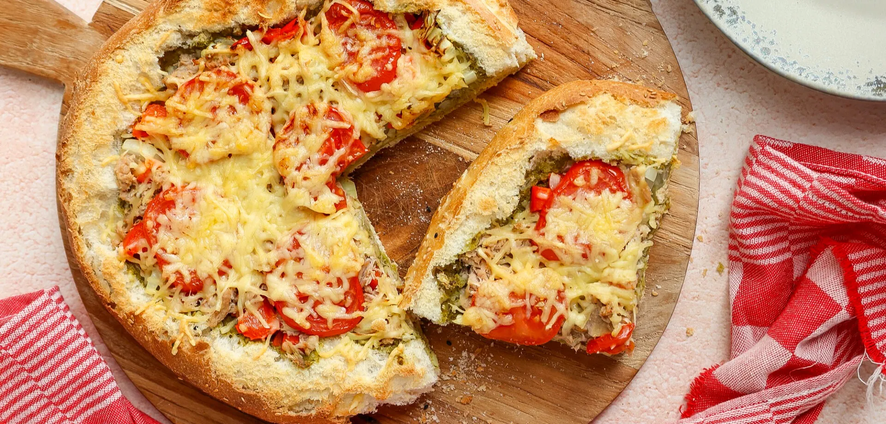

Turks brood met tonijn

Ingredienten
- 1 Turks brood
- 160 gr tonijn (Princes)
- 1 potje pesto groen of rood
- 1/2 paprika
- 1 kleine ui
- 2 tomaten
- 50 gr geraspte kaas
Bereiding
- Verwarm de oven voor op 200 graden.
- Snijd de bovenkant, het kapje, van het Turks brood eraf en hol het brood een beetje uit met je vingers (niet teveel weghalen).
- Smeer het brood in met pesto.
- Giet de tonijn af.
- Snijd de ui en paprika in stukjes. Snijd de tomaten in plakjes.
- Verdeel de ui, paprika en tonijn over het brood.
- Leg de plakjes tomaat er bovenop.
- Maak af met wat geraspte kaas.
- Bak het Turks brood 15 minuten in de oven.
- Serveer met sla.